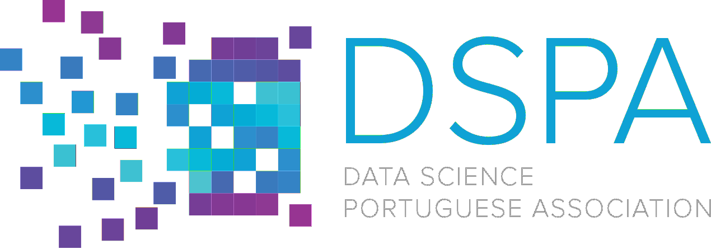
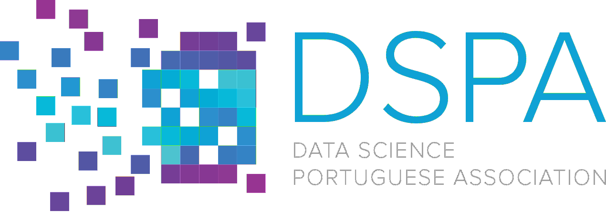

Disclaimer: StayAlert has a margin of error of 0.18%. We are working to obtain more up-to-date, real-time data in order to improve their accuracy. We stress that this project is based on a predictive model based on population mobility and confirmed infected data. The least likely areas are also areas of imminent contagion, so we call on all civil society to follow the recommendations of the DGS.